Graphical user interface (GUI) for filtering and browsing the participant database.
This application was developed to provide an easy method for (1) filtering the Star database, (2) browsing the filtered selections, and (3) generating descriptive statistics and audiogram plots.
The Subject Browser truncates the Star database to fields pertinent to recruiting, making the database easier to work with. Values are sorted alphanumerically, allowing for easy selection. Because values are stored locally, filtering is instantaneous.
You can now see the most pertinent subject information all in one organized display, including the full graphical audiogram. Recommended acoustic coupling, vent sizes, and receiver gains are provided based on Pro Fit logic. Because values are stored locally, browsing is instantaneous.
After filtering or importing your participants, the Subject Browser can provide descriptive statistics (e.g., mean age, PTA), as well as individual and mean audiogram plots based on your selected participants.
The Subject Browser has two views: the filter view, and the browse view.
The filter view (below) is for specifying filter values and monitoring how many participants are removed after applying each filter. The left side of the screen contains a series of dropdowns. Each row of dropdowns makes up a single filter. Use the dropdown titled "Attributes" to select which value you would like to filter (e.g., Hearing Aid Use). Next, use the dropdown titled "Operators" to select how you would like to filter (e.g., equals). Finally, use the dropdown titled "Values" to select a specific value to use as your filter criterion (e.g., binaural). Filters must begin at the top row, with subsequent filters using the row directly beneath the last; in other words, you cannot skip rows when specifying filters. For example, you cannot enter filter values in the top row and the third row with nothing in the second row.
When you have finished entering filter values, click the "Filter Records" button below the dropdowns. The text area on the right side of the screen will display the total record count after each filter has been applied so you can monitor how many participants each filter excluded.
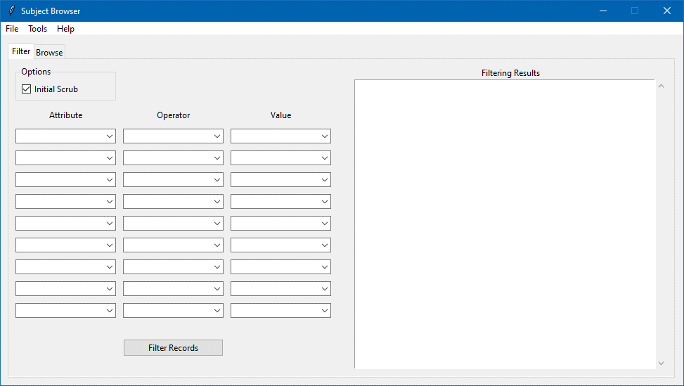
The browse view (below) is for inspecting the remaining participants after filtering. All remaining participants will appear by ID in the left colum. Simply click on an ID to see pertinent information about a participant. The labels in the middle of the screen display information about the participant and any device information on record.
Note the device information labels also show the Pro Fit recommendations for coupling type (e.g., open dome), vent size (if appropriate), and receiver gain (e.g., M). These calculations are from Pro Fit logic shared by Laura Woodworth, and are not guaranteed to agree with the Pro Fit software every time. Additionally, the Pro Fit logic may change over time. The logic used in this version of the application is from August, 2022. Despite these limitations, this feature saves you the time of opening the fitting software and simulating a fitting to get the same information.
The plot on the right side of the screen displays the participant's audiogram.
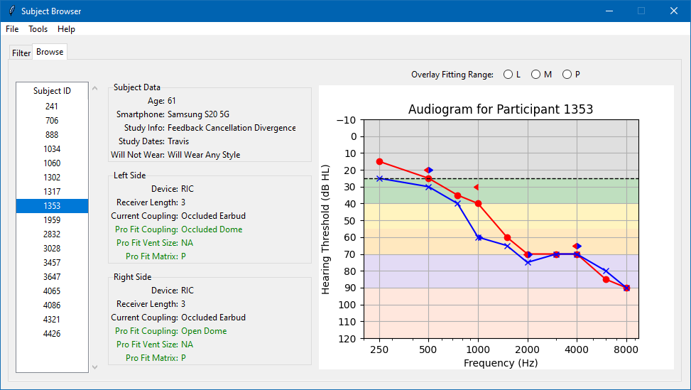
It is often necessary for the clinician to override the receiver gain suggested by the Pro Fit logic (e.g., due to edge cases and limitations in the formula). To aid the clinician in selecting gain, a row of buttons above the audiogram allows you to overlay the fitting range of each type of receiver directly over the audiogram. To remove the overlay and return to the default view, simply click the ID in the left column.
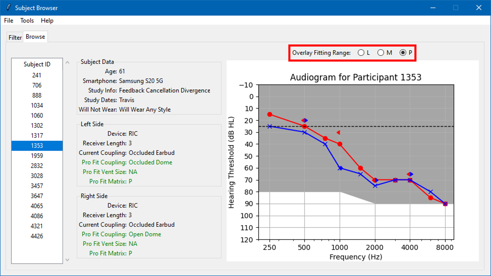
Log into the Star database and click the "General Search" tab.
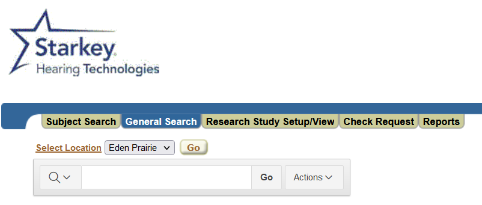
Click the "Actions" button, then choose "Select Columns."
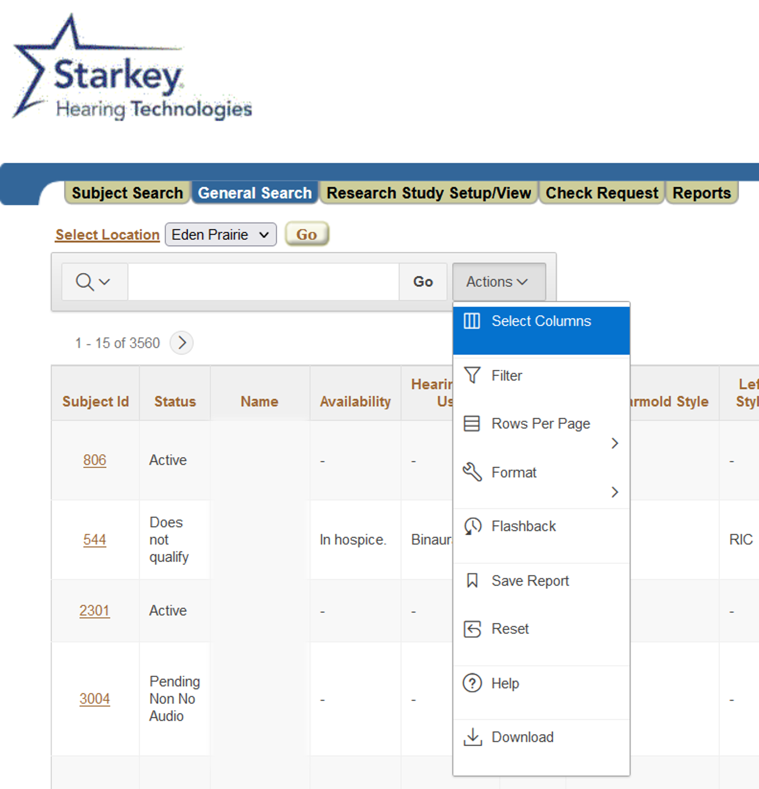
In the window that appears, click the double arrows (pointing right) button to move all the columns into the "Display in Report" list box. Then click "Apply."
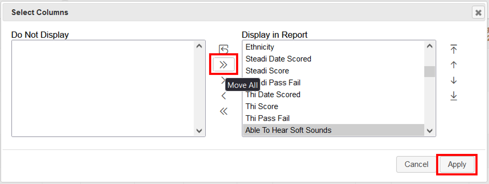
Click the "Actions" button again, then choose "Download."
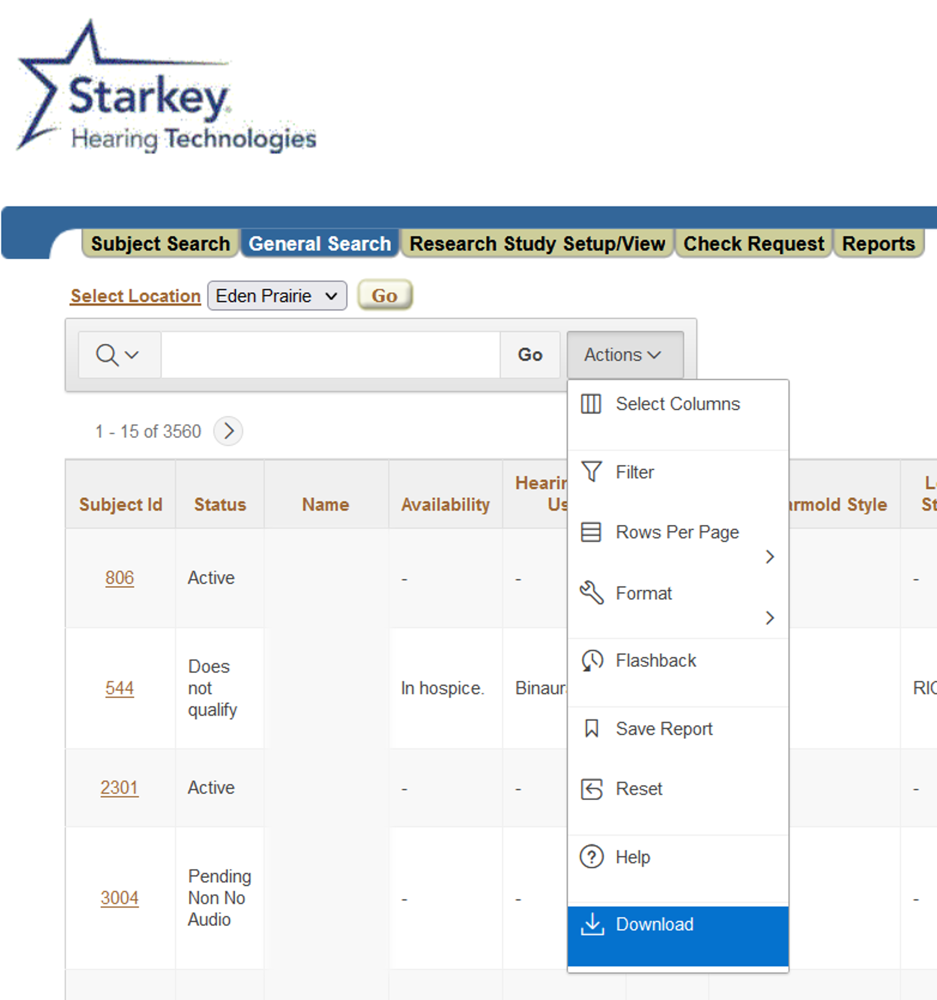
Click the "CSV" button in the window that appears and wait for the file to download.
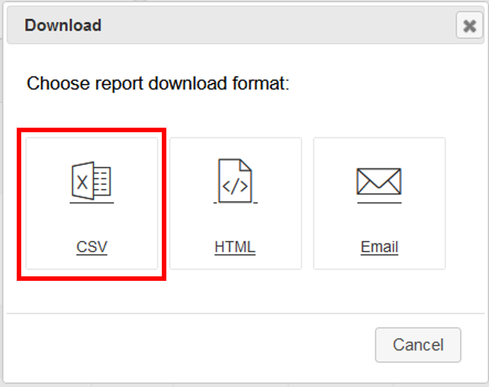
The Subject Browser can import full downloads from the Star database, as well as filtered database files exported from the Subject Browser. Because a lot of data are removed from the original download upon import, you will need to select the proper type of database from the File menu (i.e., Full DB or Filtered DB).
When importing the full database, you have the option to perform some default filtering to remove:
These filters are automatically applied if the "Initial Scrub" checkbox in the "Options" group (in the filter view) is selected. To avoid these filters, deselect the checkbox before importing the full database.
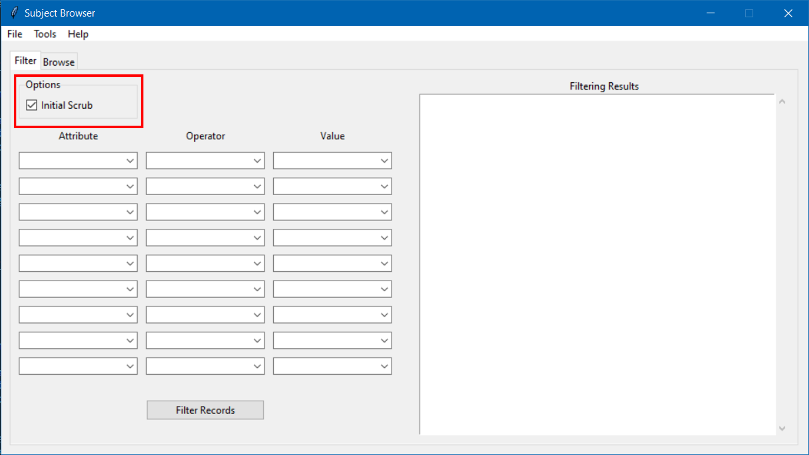
Filtered databases refer to databases previously exported from the Subject Browser, even if no filters were applied (there is a lot of behind-the-scenes cleaning of the data upon import).
Note that "Initial Scrub" filtering is not applied when importing filtered databases.
The Subject Browser allows you to export filtered .csv database files for further work in Excel and for sharing with others. You can also import the exported files later for browsing and/or further filtering.
The Subject Browser allows you to import a list of saved filter values to avoid entering filter values by hand, useful when using the same filter values across several recruiting sessions, or to make use of more filters than the number of filtering dropdowns on the interface.
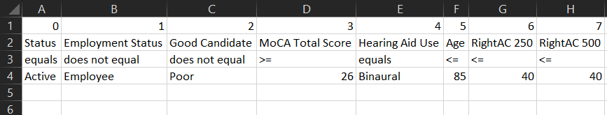
Note: Imported filters are not displayed in the filter dropdowns in the filter view. You can still track filtering progress in the Filtering Results text area in the filter view, however.
The Subject Browser allows you to export a list of your custom filters in .csv format for reuse. This is useful after manually setting several filter values that you might want to use again. The values are stored in a .csv file, which you can edit to add/remove or change filter values.
The Subject Browser will provide descriptive statistics for the currently loaded group of participants by navigating to Tools>Summary Statistics.
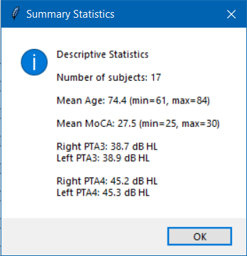
The frequencies used for PTA3 include: 500, 1000, and 2000 Hz.
The frequencies used for PTA4 include: 500, 1000, 2000, and 4000 Hz.
You can generate a plot showing each individual ear's thresholds, as well as the group mean thresholds by navigating to Tools>Group Audiogram. The resulting plot shows individual thresholds in grey (for each ear), with mean thresholds per ear in red and blue (right and left, respectively).
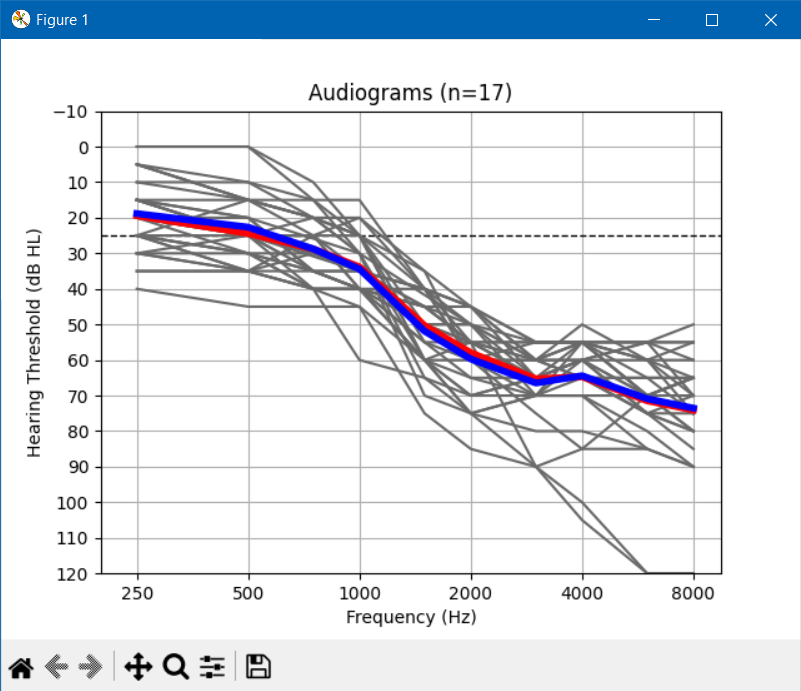
To clear all filter values, navigate to Tools>Reset Filters.
Additional data:
pyinstaller --noconfirm --onefile --windowed --add-data "C:/Users/MooTra/Code/Python/recruiting/assets/README;README/" --add-data "C:/Users/MooTra/Code/Python/recruiting/assets/sample_data.csv;." "C:/Users/MooTra/Code/Python/recruiting/controller.py"
Please use the contact information below to submit bug reports, feature requests and any other feedback. Thank you for using the Subject Browser!